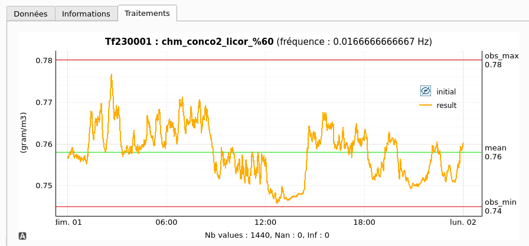
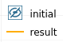
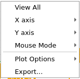

Fonctionnalité Détail
L'onglet Traitements
Graphe

Manipulations sur le graphe des données
- Zoom avant / zoom arrière
à la molette de la souris.
- Déplacement
drague à la souris.
- Remise dans l'état initial ()
après un zoom ou un déplacement du graphe, une petite icône
apparaît en dessous à gauche du graphe.
En cliquant sur cette icône, le graphe est réaffiché dans son état
initial.
- Déplacement de la légende
drague à la souris.
- Masquage d'une courbe de données
dans la légende, cliquer sur la ligne de couleur des données à
maquer.
La ligne colorée est remplacée par une icône de masquage :

- Autres manipulatins
un click droit à l'intérieur du graphe donne accès à d'autres
manipulations par l'interméfiaires du menu :
